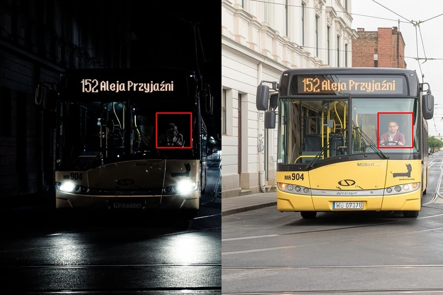
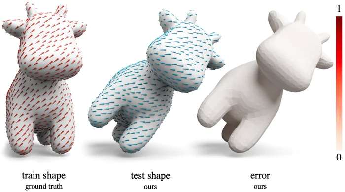
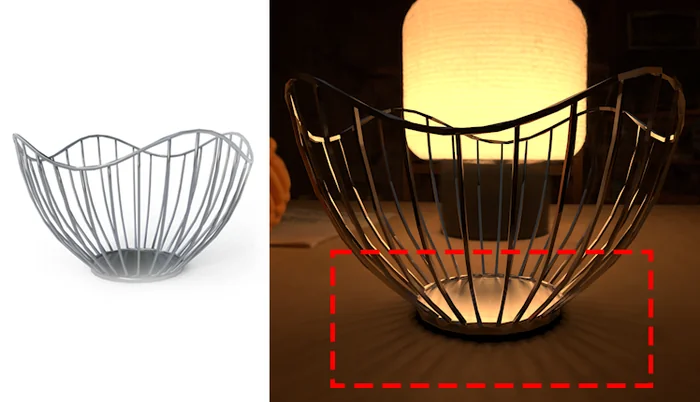
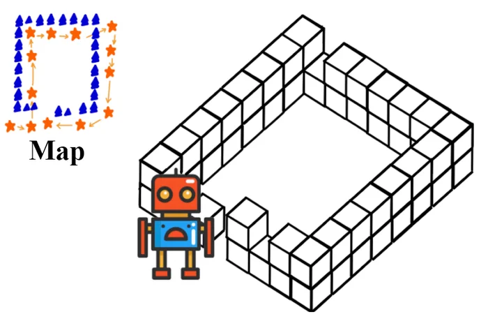
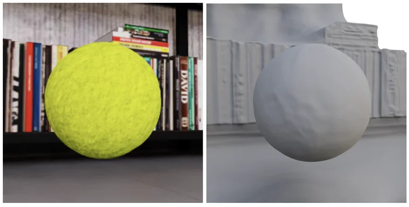

Real-Time Diffusion Relighting as a Neural Sensor: Closing the Low-Light Domain Gap for Robotic Perception
IEEE/RSJ International Conference on Intelligent Robots and Systems (IROS), 2026
Hello, I’m a research scientist at Waabi. I’m also a PhD candidate in Computer Science at the University of Maryland, College Park, where I’m advised by Ming C. Lin.
My research applies machine learning to geometric problems in computer graphics, with the goal of enabling new ways for artists and engineers to create. My interests include animation and simulation, geometry processing, geometric deep learning, and generative models for multimodal data.
I’ve interned at World Labs, Roblox, and Google, and before that worked as a software engineer at Amazon. I did my MS in Computer Science at NYU and my BA in Film Production at USC School of Cinematic Arts.
Feel free to reach out: gaoalexander@gmail.com.





* equal contribution
Reviewer